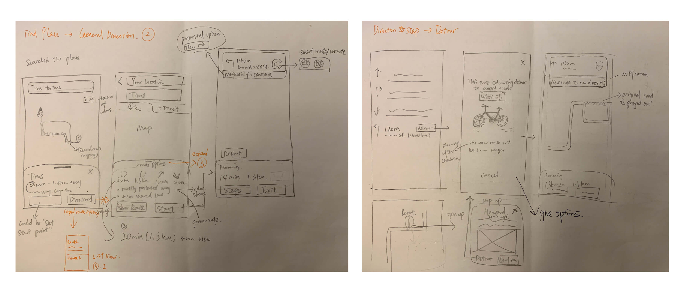
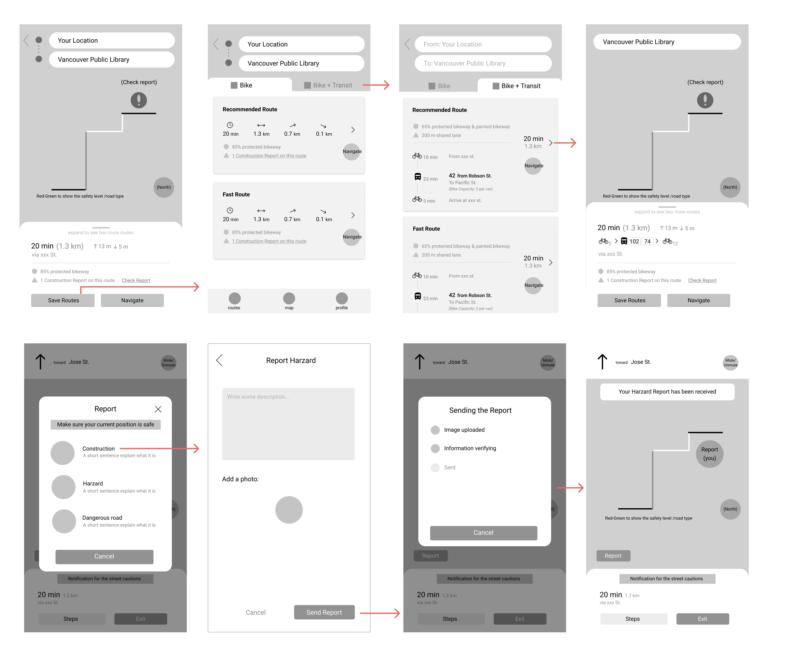
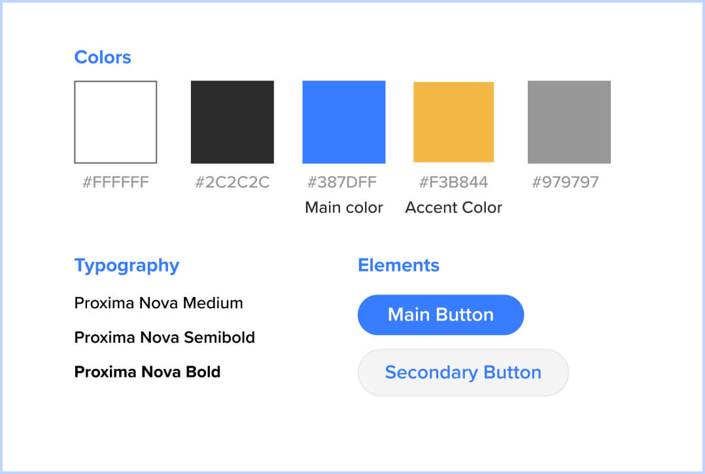

Individual project, April 2021. The project started as an Android development app, I researched, ideated, and developed the app prototype with teammate Keith L. The content below showcases my redesign process of the app after an Android development project.
UX/UI Design
SOFTWAREFigma
Van Bike is a route-planning app that helps novice bikers plan routes to unfamiliar places and ride safely in Vancouver. It allows users to select their desired route based on their experience level and road type preferences. The goal of this project is to create a comfortable biking experience so it encourages people in the city to bike more.
This app project started off as an school Android development project with teammate Keith. Although we developed an interactive bike map with Google Map APIs successfully, there were many technical constraints for two amateur developers to create the features we wanted. After that, I decided to redesign the app to create an integrated user experience. The content below showcases my redesign process of this app.
Vancouver CityStudio’s request was to create an interactive map that helps residents to discover cycling routes in the city. To lower the carbon footprint in the transportation sector, the city tries to engage more residents in biking by creating a safe and convenient biking experience. However, it’s reported that many people are not willing to bike due to safety concerns from complex road conditions and busy traffic.
As the city says: “We want to prove it’s easier than you think to get to your friend's house by bike.”
To begin with, I discussed with CityStudio staff to understand their objectives and challenges. From this conversation, I learned one big reason that stops citizens from biking is their lack of experience and guidance. So I decided to narrow the scope down to helping novice bikers since
Then, I interviewed 3 novice bikers. Since finding participants who match the demographics was difficult in this process, I did more secondary research by reading articles and blogs from online cycling communities (like Vancouver HUB) to reduce the bias caused by this small sample group.
The key takeaways from these researches include:
1. The lack of separation from cars and dangerous road conditions (like unpaved roads and hills) are the most important factors that make bikers feel unsafe.
2. Existing apps don’t provide localized data. For example, Google Maps might lead them to an unpaved road.
To understand why the city needs a dedicated cycling app, I analyzed 3 popular route planning apps for cyclists. As a result, these apps have limitations on choosing a route that reflects cyclists’ road preferences.
Since safety and the ease of biking significantly impact people’s experience of biking. I decided to focus on creating a comfortable biking experience by avoiding dangerous factors on the road. Here is the focus of the project:
Here is the sketch and wireframe process that focuses on building the features of informing users of the road types and general route information. Also, I ideated and tried interaction of selecting a preferred route and the map navigation.
 Since the app caters to the novices, the visual design is created to deliver the feeling of “Approachable, Encouraging, and Trustworthy”.
After searching the destination, the user can click the “Direct” button to generate the suggested route. Since road type impacts bikers’ experience significantly, the route displays a summary of the included road types from 6 categories (shared lanes, protected bike lanes...) , distance, and duration. So, the user can select the route based on their comfort level.
The interface will display hazard reports on the road of selected route. Once checked the hazard report, the user can generate new routes by detouring the dangerous location, which makes sure the route is safe.

During the usability testing with 3 users, they all reported the issues of this feature. For example, they questioned what if there are multiple hazards on this route, does the user need to detour individually for each one? Also, some of them mentioned the road types’ color-coding with different shades of blue is not memorable.
The testing result indicates the rare usecase that I neglected when designing the interaction. With the feedback, I redesigned the interaction flow to address these problems. Also, I simplified the road types’ color-coding: blue for regular road types (shared lanes/unpaved roads) and yellow for the dangerous ones.

To make sure the hazard alarm is current and accurate, the report function allows the bikers to update the hazards they witnessed on the road. After an internal review of the city, other bikers using this app can use this information to avoid potential danger.

In the iterations, the insights gathered from the testings spot many flaws of the app usability. For example, when integrating the detour function, the feedback allows me to refine the interface to make it understandable. Also, I practiced looking at the design from the user’s perspective, so I was able to trim off complex interactions to make the interface intuitive and elegant. Overall, I believe the design answers the project requirement and provides a feasible solution for safe biking.
For future improvement, I believe it will be helpful to do a field study to understand how bikers react to different challenges on the road. One thing I might look into is integrating audio support and voice recognition to give users more ways to access the route information while biking on the road.